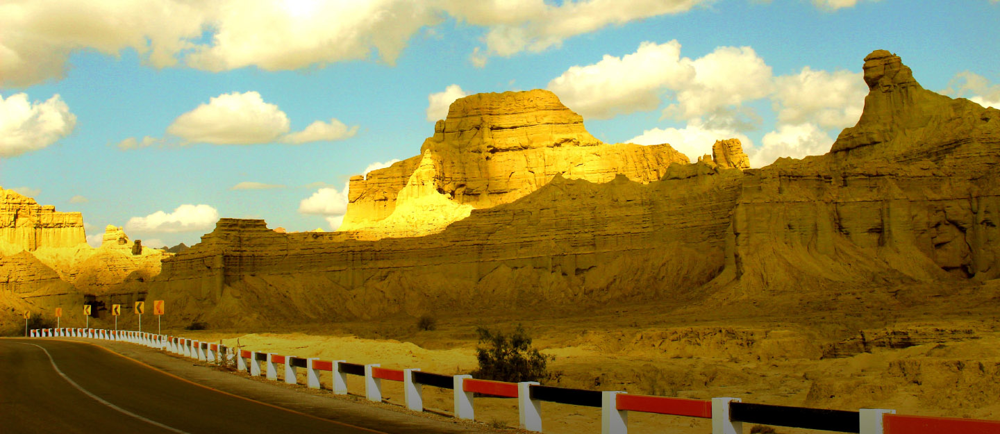

<div class="portfolio-single-load clearfix">
    <div class="custom-full-width-box">
        <div class="custom-container">
            <div class="custom-row align-items-center">
                <div class="custom-image-column">
                    
                </div>
                <div class="custom-text-column">
                    <h2 class="custom-heading">Hingol National Park</h2>
                    <p class="custom-paragraph">
                        Hingol National Park, located along the Makran Coastal Range, is a haven for wildlife enthusiasts and nature lovers alike. Spanning over 6,100 square kilometers, this vast wilderness is home to a diverse array of flora and fauna, including the endangered Balochistan bear and the majestic Persian leopard. Visitors can explore the park's rugged terrain, scenic valleys, and ancient rock formations, while marveling at its rich biodiversity. Highlights include the iconic Sphinx and Princess of Hope rock formations, as well as the mystical Mud Volcanoes, adding to the park's allure as a natural wonderland.
                    </p>
                </div>
            </div>
        </div>
    </div><!-- .custom-full-width-box end -->

</div><!-- end single-project -->
